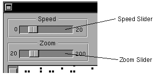

The evolution of the population is controlled by buttons and sliders on the main window. The buttons are also duplicated in the Action submenu.
✓ To let the population evolve continuously, click the Run button, either in the main window or in the Action submenu. The button is a double action one. So it changes it's title to Stop. Click again to stop.
✓ Clicking on one of the Step buttons will evolve the population one generation only.
✓ The Clear button clears the field and resets the generation counter to zero.
✓ The Zoom slider controls the scale of the field.
✓ The Speed slider enables one the change the speed in which generations pass. Note that The larger the population the slower the pace will be. The program will try to make the pace as constant as possible.
see also
saving and loading files
changing the format